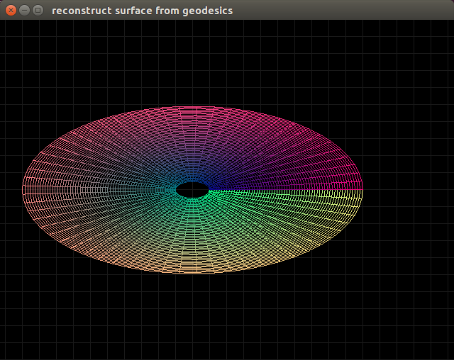

Motive
Lots of NR codes operate on a (rectangular?) grid
and likewise they keep track of only the metric and coordinate information
with no information about the background coordinate system.
This is an attempt to reconstruct the surface of the coordinate space using only the numerical metric information.
I am integrating the basis vectors using the connection coefficients, and integrating the points in background coordinate space using the basis vectors.
So far I can reconstruct any surface with no extrinsic curvature, provided the correct initial coordinates and basis are provided.
Theory
The metric tensor $g_{ab}$ defines how arclengths are measured across a surface.
It is defined by the equation $g_{ab} = \langle e_a, e_b \rangle$
Arclengths are defined using $ds^2 = g_{ab} dx^a dx^b$
The inverse metric is represented as $g^{ab}$ and fulfills the identity $g_{ac} g^{cb} = \delta_a^b$, where repeated indexes are implicitly summed in accordance with Einstein notation.
Commutation coefficients define the non-commutative elements of the $e_a$ operators: $[e_a, e_b] = {c_{ab}}^c e_c$, where $[a,b]$ is the Lie bracket.
Connection coefficients are defined by the equation ${\Gamma^a}_{bc} = \frac{1}{2} g^{ad} (g_{db,c} + g_{dc,b} - g_{bc,d} + c_{dbc} + c_{dcb} - c_{bcd})$
Commas are used to denote comma derivatives, so $g_{ab,c} = \frac{\partial g_{ab}}{\partial x^c}$.
In a holonomic coordinate system, $e_a = \partial_a = \frac{\partial}{\partial x^a}$, therefore $[e_a, e_b] = \partial_a \partial_b - \partial_b \partial_a = 0$,
so $c_{abc} = 0$, and this simplifies to $\frac{1}{2} g^{ad} (g_{db,c} + g_{dc,b} - g_{bc,d})$
In certain circumstances the $e_a$ operators can be represented as basis: $e_a = {e_a}^I \partial_I$.
$e_u = {e_u}^I \frac{\partial}{\partial x^I}$
and ${e^v}_J$ is the inverse of ${e_u}^I$
such that ${e_u}^I {e^v}_I = \delta_u^v$ and ${e_u}^I {e^u}_J = \delta^I_J$
$[e_u, e_v] = e_u e_v - e_v e_u$
$= {e_u}^I \frac{\partial}{\partial x^I} ({e_v}^J \frac{\partial}{\partial x^J}) - {e_v}^I \frac{\partial}{\partial x^I} ({e_u}^J \frac{\partial}{\partial x^J})$
$= {e_u}^I ( (\frac{\partial}{\partial x^I} {e_v}^J) \frac{\partial}{\partial x^J} + {e_v}^J \frac{\partial}{\partial x^I} \frac{\partial}{\partial x^J}) - {e_v}^I ((\frac{\partial}{\partial x^I} {e_u}^J) \frac{\partial}{\partial x^J} + {e_u}^J \frac{\partial}{\partial x^I} \frac{\partial}{\partial x^J})$
$= {e_u}^I (\frac{\partial}{\partial x^I} {e_v}^J) \frac{\partial}{\partial x^J} - {e_v}^I (\frac{\partial}{\partial x^I} {e_u}^J) \frac{\partial}{\partial x^J}$
$= ({e_u}^I {{e_v}^J}_{,I} - {e_v}^I {{e_u}^J}_{,I}) \frac{\partial}{\partial x^J}$
$= ({e_u}^I (\frac{\partial x^a}{\partial x^I} \frac{\partial}{\partial x^a} {e_v}^J) - {e_v}^I (\frac{\partial x^a}{\partial x^I} \frac{\partial}{\partial x^a} {e_u}^J)) \frac{\partial}{\partial x^J}$
$= ({e_u}^I {{e_v}^J}_{,a} - {e_v}^I {{e_u}^J}_{,a}) {e^a}_I \frac{\partial}{\partial x^J}$
$= (\delta_u^a {{e_v}^J}_{,a} - \delta_v^a {{e_u}^J}_{,a}) \frac{\partial}{\partial x^J}$
$= ({{e_v}^J}_{,u} - {{e_u}^J}_{,v}) \frac{\partial}{\partial x^J}$
So for $[e_u, e_v] = {c_uv}^w e_w = {c_uv}^w {e_w}^J \frac{\partial}{\partial x^J}$
we find ${c_uv}^w {e_w}^I = ({{e_v}^I}_{,u} - {{e_u}^I}_{,v})$
or ${c_uv}^w = ({{e_v}^I}_{,u} - {{e_u}^I}_{,v}) {e^w}_I$
Substitute the values of $g_{ab}$ and ${c_{ab}}^c$ in terms of ${e_a}^I$ into ${\Gamma^a}_{bc}$ and (TODO)...
Next we can define a covariant derivative $\nabla_b T^a = {T^a}_{,b} + {\Gamma^a}_{cb} T^c$ which represents a derivative in curved space.
From this we see $\nabla_c e_b = {\Gamma^a}_{bc} e_a$
Take, for example, polar geometry.
TODO what is less offensive to a mathematician? Using row vectors and maintaining a left-multiplied linear system, or using column vectors and a right-multiplied linear system?
Polar geometry is represented by the coordinate chart $x^I = \pmatrix{x \\ y} = \pmatrix{r cos \theta \\ r sin \theta}$
The holonomic representation of polar geometry uses a coordinate basis of $e_a = \partial_a$, so ${e_r}^I = \partial_r x^I = \pmatrix{cos \theta \\ sin \theta}$
and ${e_\theta}^I = \partial_\theta x^I = \pmatrix{-r sin \theta \\ r cos \theta}$.
$g_{ab} = {e_a}^I {e_b}^J \delta_{IJ}$ gives us $g_{rr} = 1$, $g_{\theta\theta} = r^2$, $g_{r\theta} = g_{\theta r} = 0$.
${\Gamma^\theta}_{\theta r} = {\Gamma^\theta}_{r\theta} = \frac{1}{r}$, ${\Gamma^r}_{\theta\theta} = -r$
Let's look at the change of basis equation along the $r$ coordinate:
$\nabla_r {e_a}^I = {\Gamma^a}_{br} {e_b}^I$
Write this out as a matrix, and look at the coordinate derivative:
$\nabla_r {e_b}^I = {\Gamma^a}_{br} {e_a}^I$
$\frac{\partial}{\partial r} \cdot {}_{\downarrow b} \overset{\rightarrow I}{ \left[\matrix{ {e_b}^I }\right] }
= {}_{\downarrow b} \overset{\rightarrow a}{ \left[\matrix{ {\Gamma^a}_{br} }\right] }
\cdot {}_{\downarrow a} \overset{\rightarrow I}{ \left[\matrix{ {e_a}^I }\right] } $
$\frac{\partial}{\partial r} \pmatrix{ {e_r}^x & {e_r}^y \\ {e_\theta}^x & {e_\theta}^y }
= \pmatrix{ {\Gamma^r}_{r r} & {\Gamma^\theta}_{r r} \\ {\Gamma^r}_{\theta r} & {\Gamma^\theta}_{\theta r}} \pmatrix{ {e_r}^x & {e_r}^y \\ {e_\theta}^x & {e_\theta}^y }
= \pmatrix{ 0 & 0 \\ 0 & \frac{1}{r}} \pmatrix{ {e_r}^x & {e_r}^y \\ {e_\theta}^x & {e_\theta}^y }
= \pmatrix{ 0 & 0 \\ \frac{1}{r} {e_\theta}^x & \frac{1}{r} {e_\theta}^y }$
So ${e_r}^I$ is constant,
and $\frac{\partial}{\partial r} {e_\theta}^I = \frac{1}{r} {e_\theta}^I$
$\frac{\partial {e_\theta}^I}{{e_\theta}^I} = \frac{\partial r}{r}$
${e_\theta}^I = C r$
Initializing ${e_\theta}^I(r_0)$ at $r_0$ gives us
${e_\theta}^I(r_0) = C r_0$
which means
$C = \frac{1}{r_0} {e_\theta}^I(r_0)$
and gives us
${e_\theta}^I(r) = \frac{1}{r_0} {e_\theta}^I(r_0) \cdot r$
Viola, we see ${e_\theta}^I$ grows by $r$ as a function of $r$.
Now the same trick when integrating by angle:
$\nabla_\theta {e_b}^I = {\Gamma^a}_{b\theta} {e_a}^I$
$\frac{\partial}{\partial r} \pmatrix{ {e_r}^x & {e_r}^y \\ {e_\theta}^x & {e_\theta}^y }
= \pmatrix{ {\Gamma^r}_{r \theta} & {\Gamma^\theta}_{r \theta} \\ {\Gamma^r}_{\theta \theta} & {\Gamma^\theta}_{\theta \theta}} \pmatrix{ {e_r}^x & {e_r}^y \\ {e_\theta}^x & {e_\theta}^y }
= \pmatrix{ 0 & \frac{1}{r} \\ -r & 0} \pmatrix{ {e_r}^x & {e_r}^y \\ {e_\theta}^x & {e_\theta}^y }$
This looks like a linear dynamic system.
Eigen decomposition of the matrix form of ${\Gamma^a}_{b\theta}$ gives us:
$\pmatrix{ 0 & \frac{1}{r} \\ -r & 0} = \pmatrix{ 1 & 1 \\ -i r && i r} \pmatrix{-i & 0 \\ 0 & i} \pmatrix{\frac{1}{2} & \frac{i}{2 r} \\ \frac{1}{2} & -\frac{i}{2r} }$
Therefore the matrix exponent can be calculated as
$exp( \theta \cdot \left[ {\Gamma^a}_{b\theta} \right] )
= \pmatrix{ 1 & 1 \\ -i r && i r} \pmatrix{exp(-i \theta) & 0 \\ 0 & exp(i \theta)} \pmatrix{\frac{1}{2} & \frac{i}{2 r} \\ \frac{1}{2} & -\frac{i}{2r} }
= \pmatrix{ cos \theta & \frac{1}{r} sin \theta \\ -r sin \theta & cos \theta}
$
And we now get an equation for integrating our basis around $\theta$:
$\pmatrix{ e_r \\ e_\theta }|_\theta = exp(\theta \cdot {\Gamma^a}_{b\theta} ) \cdot \pmatrix{ e_r \\ e_\theta}|_{\theta_0}$
$\pmatrix{ {e_r}^x & {e_r}^y \\ {e_\theta}^x & {e_\theta}^y }|_\theta
= \pmatrix{ cos \theta & \frac{1}{r} sin \theta \\ -r sin \theta & cos \theta } \pmatrix{ {e_r}^x & {e_r}^y \\ {e_\theta}^x & {e_\theta}^y }|_{\theta_0}$
Let's say we initialize our basis at $e_r(r_0, \theta_0) = \pmatrix{ \cos \theta_0 \\ sin \theta_0 }$.
and, orthonormally, $e_\theta(r_0, \theta_0) = \pmatrix{ -sin \theta_0 \\ cos \theta_0}$.
Apply the solution to $\nabla_r {e_a}^I$, we know $e_r(r, \theta_0)$ stays constant at $\pmatrix{\cos \theta_0 \\ \sin \theta_0}$,
however $e_\theta(r, \theta_0) = \frac{r}{r_0} \pmatrix{ -sin \theta_0 \\ cos \theta_0 }$.
Now that we have ${e_a}^I(r, \theta_0)$, let's integrate around the polar angle.
$\pmatrix{ {e_r}^x & {e_r}^y \\ {e_\theta}^x & {e_\theta}^y }|_\theta
= \pmatrix{ cos \theta & \frac{1}{r} sin \theta \\ -r sin \theta & cos \theta }
\pmatrix{ cos \theta_0 & sin \theta_0 \\ -\frac{r}{r_0} sin \theta_0 & \frac{r}{r_0} cos \theta_0 }$
$=
\pmatrix{1 & 0 \\ 0 & r}
\pmatrix{ cos \theta & sin \theta \\ -sin \theta & cos \theta }
\pmatrix{1 & 0 \\ 0 & \frac{1}{r} }
\pmatrix{1 & 0 \\ 0 & \frac{r}{r_0} }
\pmatrix{ cos \theta_0 & sin \theta_0 \\ -sin \theta_0 & cos \theta_0 }$
$= \pmatrix{ cos \theta cos \theta_0 - \frac{1}{r_0} sin \theta sin \theta_0 & cos \theta sin \theta_0 + \frac{1}{r_0} sin \theta cos \theta_0 \\
-r (sin \theta cos \theta_0 + \frac{1}{r_0} cos \theta sin \theta_0) & -r (sin \theta sin \theta_0 - \frac{1}{r_0} cos \theta cos \theta_0 }$
For $r_0 = 1$ this gives us a surface such that travelling along $\nabla_\theta$ goes in circles:
${e_a}^I = \pmatrix{ cos (\theta + \theta_0) & sin (\theta + \theta_0) \\
-r sin (\theta + \theta_0) & -r cos (\theta + \theta_0) }$,
or $e_r = \pmatrix{ cos (\theta + \theta_0) \\ sin (\theta + \theta_0) }$, $e_\theta = r \pmatrix{ -sin(\theta + \theta_0) \\ cos(\theta + \theta_0) }$
For other $r_0 \ne 1$ we get a perturbed basis which, upon integrating, goes around in an ellipse.
Now for integrating the path of the surface around the basis:
Start at $x^I = \pmatrix{1 \\ 0}$. Any position is as good as any other. Reconstruction is isomorphic regarding the embedded space.
Practice
I've tried
- forward-Euler integration
- RK4 integration
- explicitly solving linear dynamic systems (assuming the connection is constant), which I only have available for certain classifications of matrices.
I am testing it against known metrics.
Right now just the polar metric.
If we apply this numerical technique starting at ${e_a}^I(x_0) = \delta_a^I$ and $x_0 = \pmatrix{ r_0 \\ \theta_0 } = \pmatrix{0\\1}$ we get things that work out:

If the initial coordinates are chosen to be $r_0 = 2$ then we get the following:

...and if the initial coordinates are chosen to be $r_0 = \frac{1}{2}$ then we get this:

Same deal but for the equations of the surface of a sphere.
Notice because we are integrating along $e_\theta$ and $e_\phi$, and not $e_r$, there are no ${\Gamma^r}_{ab}$ connections (which are proportional to the extrinsic curvature by a function of the metric).
This means the surface solver can't rise off the plane, and we get solutions that look like this:
For $\theta_0 = \frac{\pi}{2}, \phi_0 = \pi$ we find:

For $\theta_0 = \frac{\pi}{2}, \phi_0 = 0$ we find:

For $\theta_0 = \frac{\pi}{2}, \phi_0 = 2 \pi$ we find:

Extending this to 3D worked fine. For cylindrical easily.
However extending to spherical proved some problems.
Connections of a spherical metric involve a $cot(\theta)$ term, and therefore reach a singularity at the poles.
I also cut out a slice at $\phi=0$, I forget why, maybe just to be safe:

Changing $r_0 = 2$ squashes the sphere into an ellipsoid, similarly to how it does with polar coordinates:

However changing $\phi_0$ doesn't change things so dramatically as it does on the sphere surface.
Maybe because those changes on the sphere surface are expressions of the absence of extrinsic curvature,
while, in the 3D case, there is no extrinsic curvature.
Deriving connection coefficients numerically from the metric tensor using finite difference methods is surprisingly accurate.
Here's a graph of the Frobenius norm of the difference between the analytical connection and the numerically computed connection for holonomic polar geometry:

As you can see, everything is below $10^{-14}$